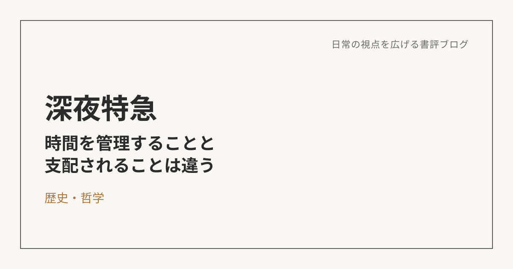

深夜特急――時間を管理することと、時間に支配されることは違う
この本について
沢木耕太郎による本作は、著者が26歳のときにインドのデリーからロンドンまでをバスだけで旅した、実体験に基づく紀行小説。飛行機を使わず、あえて陸路にこだわり、目的地までの過程そのものを旅していく。単なる旅行記ではなく、旅を通じて自分の価値観が揺さぶられていく過程が丁寧に描かれた一冊。
自分の「当たり前」が、世界の当たり前とは限らない
この本を読んで一番面白かったのは、旅を通じて自分の中にある「普通」や「当たり前」が相対化されていく感覚だった。自分が常識だと思っているものは、あくまで日本という国・文化・環境の中で生きてきた自分にとっての常識にすぎない。作中では、差別や貧困、衛生環境、交通機関、観光客への接し方、食事、死者との向き合い方、治安や風俗など、さまざまな場面で日本との違いが描かれる。どちらが上・下という話ではなく、そこにはそれぞれの土地で形成されてきた文化や価値観がある。そういう世界に触れていると、「いま自分が気にしていることって、実はそんなに大したことじゃないのかもしれない」と思えてくる。自分の常識の外側にある世界を知ることは、単に知識を増やすことではなく、自分の常識そのものを相対化することなのかもしれない。
目的地に早く着くことだけが、時間の使い方じゃない
著者の旅を見ていて特に印象に残ったのが、時間の使い方だった。基本的にはローカルな交通手段を使い、目的地があったとしても途中の土地で無目的に時間を過ごしたりする。もちろん特急を使うとお金がかかるという事情もあるけれど、結果として「目的地へいかに早く到着するか」ではなく、その途中に流れている時間そのものを味わっているように感じた。
普段の自分は、少しでも早いほうがいい、数時間無駄になったらもったいない、休日に何もしなかったら少し後悔する、というように、「時間を有効に使わなければ」という感覚をかなり持っている。でもこの本を読んでいると、それが少し馬鹿らしく思えてくる。目的地に早く着くことだけが、時間を有効に使うことではない。むしろ、予定通りに進まなかった時間や、何も起こらなかった時間の中にしかない経験もある。「焦っても何の得もない」という感覚は、自分の中に取り入れたい価値観の一つになった。
時間を管理することと、時間に支配されることは違う
一方で、仕事では時間は重要だとも思う。限られた時間の中で、どれだけ大きな成果を出せるか。仕事ではむしろ時間との勝負になる場面も多い。では、「時間を有効活用すること」と「時間に囚われないこと」をどう両立するのか。読後に考えた中でも、これは特に面白いテーマだった。
自分なりには、時間を管理することと、時間に支配されることは違う、という整理がしっくりくる。仕事では、目的を達成するために時間を管理する。一方で、休日や旅、家族との時間まで「この時間から何を得られたか」「どれだけ効率的だったか」という尺度で評価する必要はない。時間は有限だから大切にする。でも、有限だからこそ、何もしない時間や遠回りする時間を楽しむこともできる。「効率よく生きること」ではなく、「その時間をどう味わいたいのか」を自分で選べることのほうが大切なのかもしれない。
取り入れたいもの、取り入れたくないもの
この旅から自分の価値観に取り入れたいものはいくつかある。焦ったところで変わらないものまで焦らない、という時間へのおおらかさ。予定より時間がかかったことを、すぐに「損した」「無駄だった」と評価しない姿勢。スケジュールを綿密に立て、予定通り進むことだけを「成功」とせず、偶然の出会いや寄り道にも余白を残す姿勢。それから、言語が使えることで接することのできる「世界」そのものが広がるという実感も大きかった。単に海外旅行が便利になるという話ではなく、自分とは異なる常識を持つ人と直接接触できることに価値があるのだと思う。
一方で、作中で描かれる差別的な扱いや、死者への雑な扱い、観光客へのイカサマや詐欺的な扱いなどは、背景にある文化や社会状況を理解することと、自分がそれを良しとすることは別だと感じた。相対化することと、自分の価値判断を捨てることは違う。世界にはさまざまな価値観があると理解したうえで、それでも「自分はどうありたいか」を選ぶ。そこまで含めて、自分の常識を疑うということなのだと思う。
読み終えて残ったもの
旅に出たからといって、すべての価値観を変える必要はない。日本で生きている以上、日本の時間感覚や衛生観念、仕事観の中で生活していくことになる。でも、ときどきその世界の外側を知る。すると、自分が無意識に握りしめていた「こうでなければならない」を少し緩めることができる。時間を無駄にしてはいけない。予定通り進まなければいけない。清潔でなければいけない。効率的でなければいけない。そういうものは絶対的な真理ではなく、自分が生きている環境の中で身につけた一つの価値観にすぎない。だから必要なときには使えばいいし、必要のないときには手放してもいい。
※本記事はNotionに書き溜めた読書メモをもとに、AIの編集サポートを受けて構成しています。